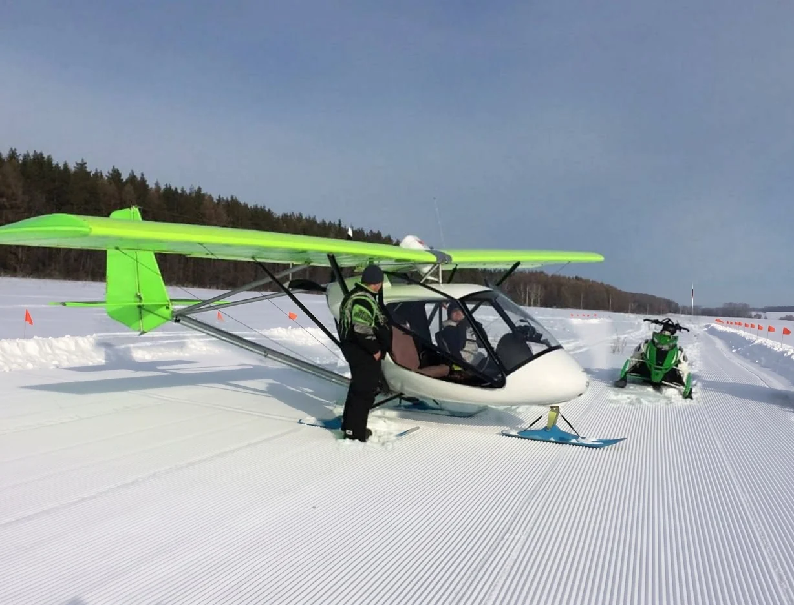
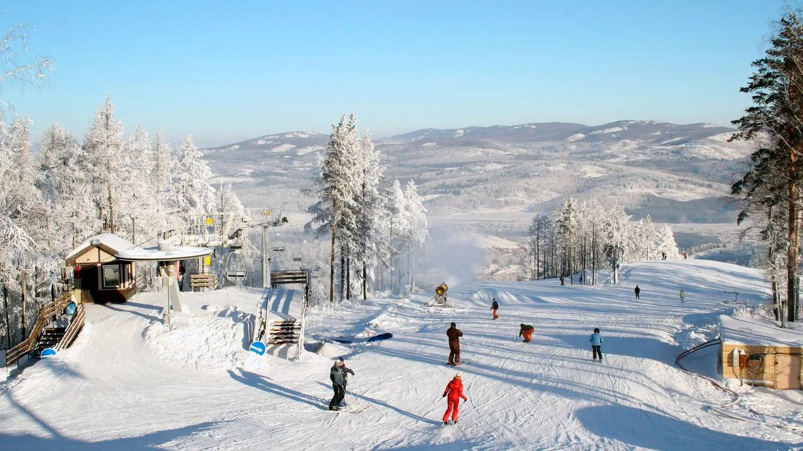
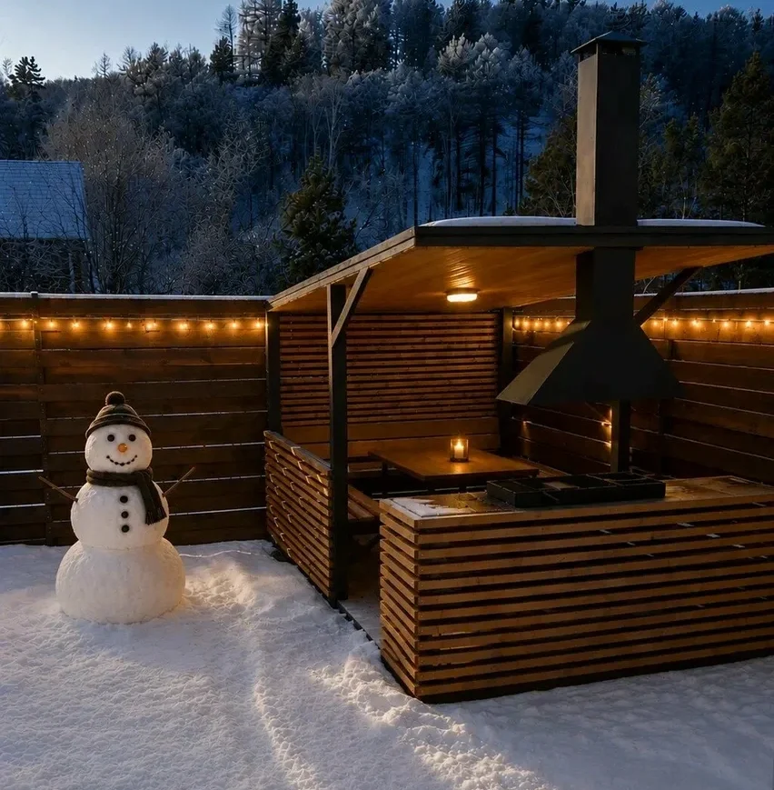
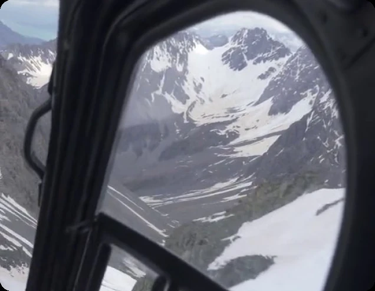
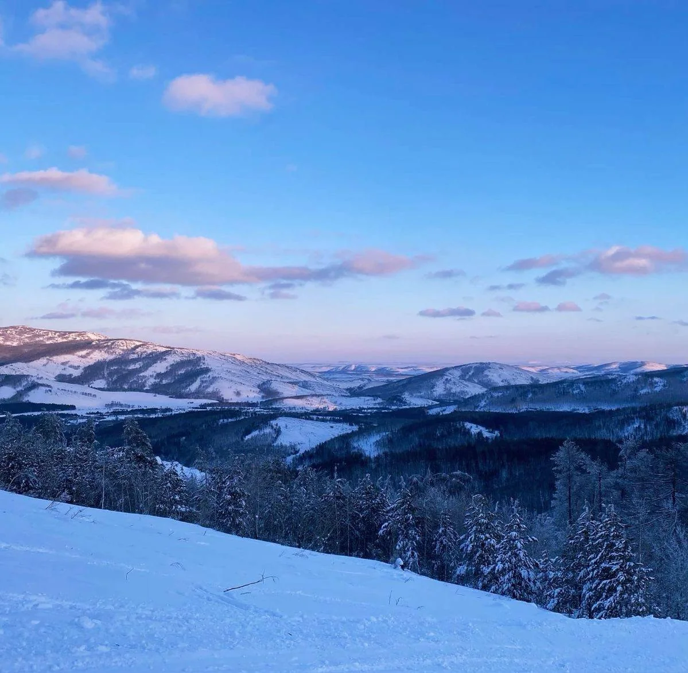

Свой самолёт и пилот
В кабине С-20 двое: пилот и вы. Лучшее место в небе сегодня ваше.
Хели-ски
Взлёт со снега, хребты Южного Урала под крылом и первый спуск в тот же день. Три дня, о которых вы будете рассказывать весь год.
Самолёт, пилот, склон, баня и вечера у огня уже собраны в одни выходные. Вам остаётся самое приятное: лететь и кататься.

В кабине С-20 двое: пилот и вы. Лучшее место в небе сегодня ваше.
1 час 40 минут Южный Урал разворачивается прямо под вами. 222 км от разбега до посадки на лыжах.

Утром аэродром, после обеда трассы Абзаково: больше 13 км, перепад до 320 м.

Дом на двоих, у каждого своя спальня. Вечером ужин и рассказы пилотов о том, что было под крылом.
Старт: аэродром Первушино под Уфой
Самолёт, 1 час 40 минут, 222 км
По земле, 35 км
Склоны Крыкты-Тау, посадка на гору в погодное окно
Самолёт, взлёт днём, к вечеру в Уфе

Утро на аэродроме Первушино под Уфой. Шесть С-20 стоят на снегу. Всё начинается как в большой авиации: взвешивание, инструктаж командира, сводка погоды. Вы садитесь рядом с пилотом, пристёгиваете ремень, и самолёт начинает разбег.
Шесть машин поднимаются вместе. 1 час 40 минут под крылом Уфимское плато и хребты Южного Урала, а в Белорецке вас ждёт посадка на лыжах. К обеду вы уже в доме в Абзаково, после обеда прокат и первые спуски по Крыкты-Тау. Вечером ужин с пилотами: они расскажут, что вы видели под крылом и почему шли именно так.
Размещение:Дом на двоих в Абзаково, у каждого своя спальня
День начинается на склоне. Когда погода открывает окно и группа готова, С-20 поднимает вас и садится прямо на горе. Дальше только вы, снег и спуск: на лыжах или сноуборде.
Решение о вылете принимает командир. Если небо закрыто, у вас полный день катания на курорте. Вечером русская баня при доме с бассейном, потом ужин и новые истории пилотов.
Размещение:Дом на двоих в Абзаково, у каждого своя спальня

Утро ваше: ещё пара спусков или снегоходы. После обеда сборы и дорога на аэродром Белорецк.
Днём снова разбег по снегу и знакомые хребты под крылом, теперь в обратную сторону. Посадка в Первушино, к вечеру вы в аэропорту Уфы. Обратный рейс лучше брать на поздний вечер, чтобы день закончился спокойно.
Три дня, свой самолёт и свой пилот
С человека. Цена фиксированная: за каждым участником закреплён отдельный борт.
Мест всего пять. Оставьте контакты: пришлём программу по дням и ближайшие даты, ответим на все вопросы.
Спасибо! Заявка у нас. Свяжемся с вами в течение дня и пришлём программу и даты.